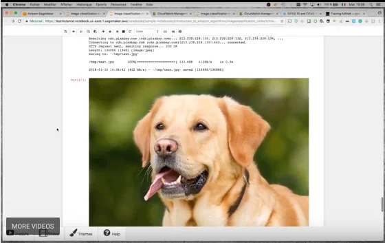

Image classification on Amazon SageMaker
In a previous video, I introduced you to Amazon SageMaker, a fully-managed service for Machine Learning. You learned about the different ways you could use SageMaker: using built-in algorithms, bringing your training script, bringing your own model and even bringing your own custom training and prediction code.

Today, I’m going to focus on using the built-in algorithm for image classification. In this code-level video, you will learn how to:
- train an image classification model on your own image data set,
- either train from scratch or fine-tune a pre-trained network,
- access and plot training logs stored in Amazon CloudWatch,
- use your trained model to classify real-life images.
Here we go!